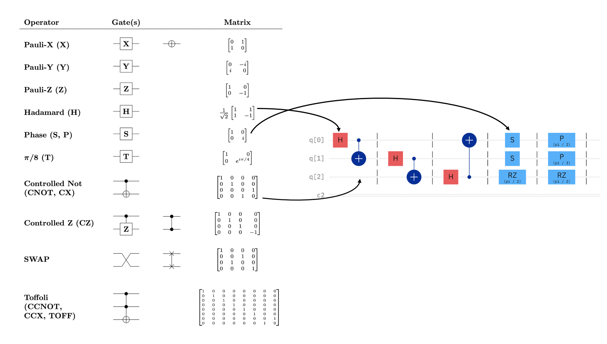
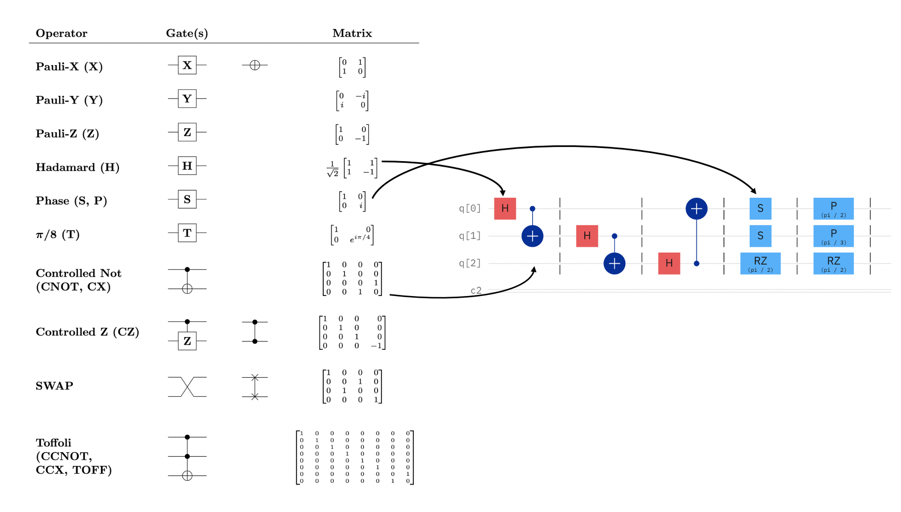
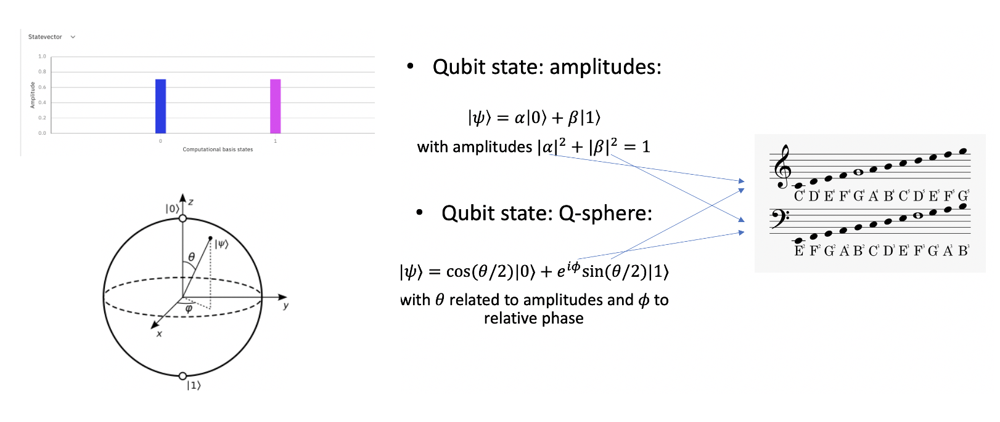

The effect of multiple quantum gates can be written as a QUANTUM CIRCUIT, that is read as (and resembles) a music sheet. Hence, we can use this analogy to translate into sound some quantum mechanical properties. 
A BIT is the classical unit of information, it has a value that is either 0 or 1.
A QUBIT, is the quantum unit of information, and since it obeys the rules of QUANTUM MECHANICS, it can be in a SUPERPOSITION of states, 0 and 1 at the same time, each with a given probability amplitude.
It can also be ENTANGLED with other qubits, which means that their states are not independent, and correlated in such a way that it is often not possible classically.
The state of a qubit can be visualized on the BLOCH SPHERE using 3D rotations as a basis. Each state is identified with two angles, θ and φ. To read the state of an individual qubit, we perform the PARTIAL TRACE over the other qubits.
The effect of multiple quantum gates can be written as a QUANTUM CIRCUIT, that is read as (and resembles) a music sheet. Hence, we can use this analogy to translate into sound some quantum mechanical properties.

 We use the angles θ and φ to map the state of a qubit to sound, and map each qubit to a different instrument; More than one mapping through the angles θ and φ is possible, for example:
Some other choices are possible to make the score more interesting, for example introducing a small offset in the notes range of each subsequent qubit.
It is also possible to set some choices, such as notes duration, by postprocessing the score, but it is important to consider that, while this may make a score resemble more a music track, this may hide and make less evident some quantum mechanical properties such as entanglement.
Have a look at the Gallery for some examples, or try for yourself, you can find the code here: Quantum Music